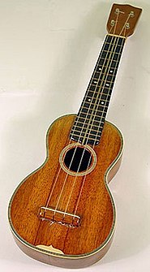

Akustická kytara je taková kytara, která k produkci zvuku využívá pouze akustických schopností svých strun a ozvučné skříňky. Jde o novotvar, protože před objevením elektrické kytary byly všechny kytary vlastně akustické. Všechny typy kytar k vytváření zvuku používají struny, nicméně ty dokáží rozechvět pouze malé množství vzduchu na to, aby byl jejich zvuk slyšitelný; o to se zase stará ozvučná skříňka s otvorem pod strunami. K dalšímu případnému zesílení se používá mikrofon nebo piezoelektrický snímač. Novotvar akustická kytara může odkazovat na následující nástroje:
Pár příkladů akustických kytar:

